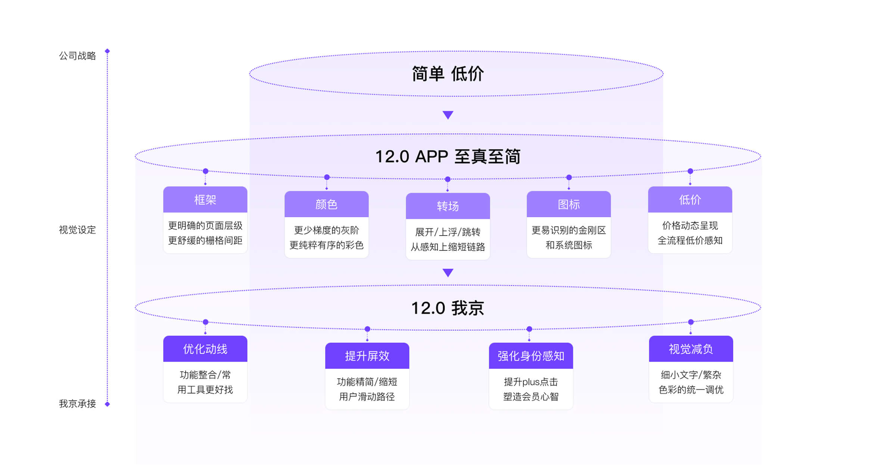
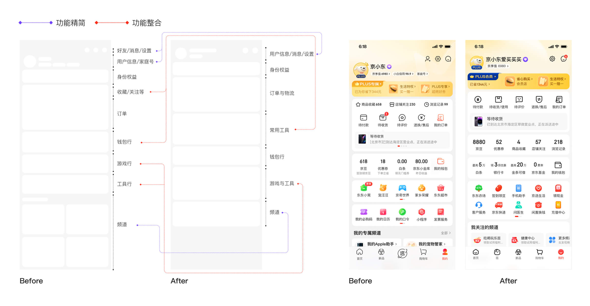
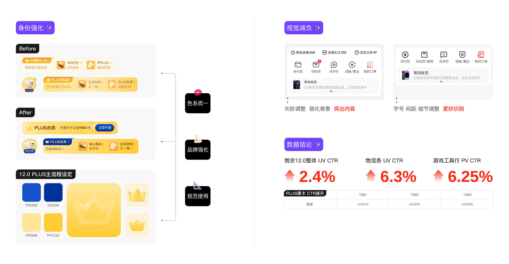

NO.1
项目一 京东APP我京12.0
NO.2
问题与目标
核心问题：旧版「我的京东」页面功能承载入口较多，信息层级复杂，视觉风格偏散，用户在查找订单、资产、权益和常用服务时路径不够清晰。
设计目标：在保留用户熟悉操作习惯的基础上，优化页面结构与视觉表达，让页面更清晰、更高效，也更符合京东 12.0 的整体升级方向。
NO.3
我负责的内容
结构梳理：参与梳理「我的京东」核心功能区，包括用户信息、订单、资产、权益、常用工具和推荐内容等模块。
视觉探索：围绕「简单、低价、至真至简」的设计方向，探索页面卡片、图标、色彩、会员氛围和整体视觉节奏。
核心设计：负责「我的京东」页面主视觉方案设计，优化顶部会员区、功能入口、钱包资产、工具区和底部内容模块。
落地协作：与产品、运营和研发团队协作，完成方案评审、设计走查、上线跟进和数据复盘。
NO.4
结果与复盘
新版「我的京东」上线后，多个核心指标表现正向：
数字工具行提升：6.25%
物流提示条 UV CTR 提升：6.5%
完整账单 UV CTR 提升：2.4%
PLUS 卡片提升：0.1%
通过本次改版，页面的信息层级更加清晰，核心功能入口更聚合，用户对订单、资产、权益和常用服务的查找效率得到提升。
我京是连接用户资产、订单、权益和服务的高频入口。改版过程中需要在功能效率、视觉品质和商业转化之间保持平衡，让页面既好用，也更有版本升级感。


